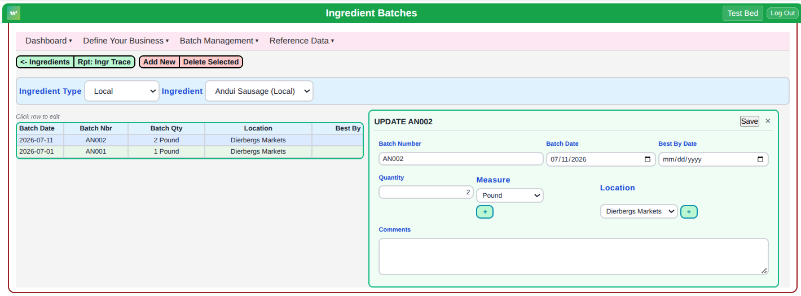
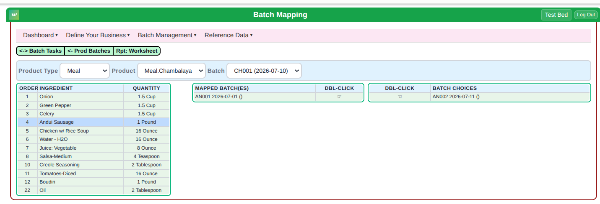
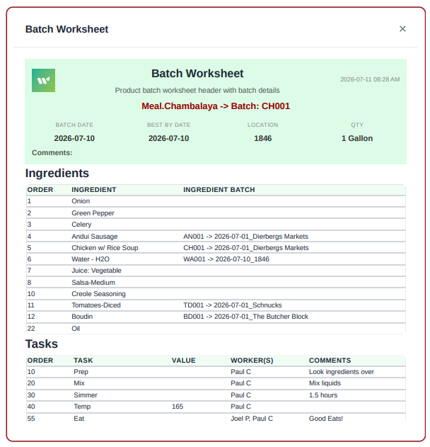
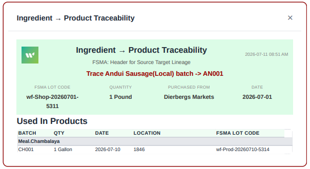

WhatsFresh gives small food makers the traceability tools retailers expect and regulators require—without the compliance headache.
Everything you need to build, manage, and trace your food production.
Edit any record instantly with a dual grid/form system. No page navigation. Make corrections, updates, and changes seamlessly.
Set up your business once, then create batches and manage ingredients in seconds. No drilling through menus.
Generate compliance-ready documentation instantly. Everything your team needs in one place.
Track any ingredient through every product it touched. Critical for recalls and FDA compliance.
Built for efficiency. See all your records in a grid, click any row to edit in a side panel. No page navigation, no drilling through menus—just instant access to what you need.
Whether you're correcting a data entry mistake, updating ingredient information, or managing batch details, changes are immediate and seamless. This is what modern data management looks like.

The old way? Drill through products or ingredients to add a batch. The new way? Three clicks: Product Type → Product → Batch. Then map your ingredients according to your recipe.
No more navigating through multiple screens. Your recipe appears automatically, showing exactly which ingredients go into this batch. Double-click to map ingredient batches, and you're done.
Ooops! Wrong mapping? No problem. Just double-click the mapped batch to unmap it. It's that simple.

After mapping your ingredients, generate a complete batch worksheet in one click. It includes:
What used to require pulling information from multiple screens is now one coherent document your team can reference during production.

Need to trace an ingredient through your entire production? What's Fresh shows you instantly:
Pick any ingredient batch and see its complete journey:
Forward tracing shows you every product that ingredient touched. Critical for understanding your production dependencies.
When a supplier issue arises, you have seconds to respond:
Instead of manually checking notebooks and spreadsheets, What's Fresh instantly identifies every batch and product affected. For FDA compliance and recalls, this isn't just helpful—it's essential.
Every trace includes:
Nothing is lost or scattered. Everything your auditors need is linked and ready.

"Being able to go straight from setting up our product to managing batches—without navigating through menus—saved us hours every week. And when we had to handle a recall, we could tell instantly which products were affected."
Join food makers who are managing batches faster and smarter.